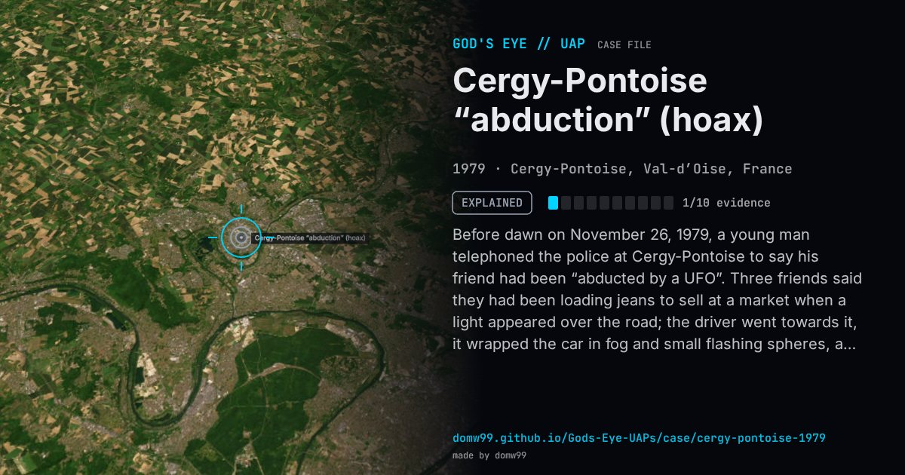

Cergy-Pontoise “abduction” (hoax)

Before dawn on November 26, 1979, a young man telephoned the police at Cergy-Pontoise to say his friend had been “abducted by a UFO”. Three friends said they had been loading jeans to sell at a market when a light appeared over the road; the driver went towards it, it wrapped the car in fog and small flashing spheres, and when the fog cleared he was gone. Seven police officers and gendarmes searched; the story became national news. The missing man reappeared at a friend’s flat on December 3, with a journalist present, saying he had woken in a cabbage field. GEPAN’s technical note found that the witnesses’ accounts diverged from the start, that a blood test gave no sign of time in weightlessness, and that cabbages said to have been dried by the light had been left to rot as fertiliser by their owner. GEIPAN classes the affair as a hoax.
Explanation
A hoax. GEIPAN, which reviewed the police and gendarmerie inquiry and its own analyses, calls it “a hoax whose course discredits the scientific work”; one of the friends is reported to have admitted years later that he made the story up.
What was seen
Shape: A light over the road that wrapped the car in fog and small flashing spheres
Witnesses: Three young men; the police and gendarmes arrived after the call
Duration: One week (the claimed disappearance)
Sources
- GEIPAN case 1979-11-00685, Cergy-Pontoise (in French)
- Sud-Ouest, November 29, 1979 (translated press archive)
Browse
- France
- 1970s
- Explained
- Close encounters
- Official government documents
- Lights and fireballs
- Spheres and orbs